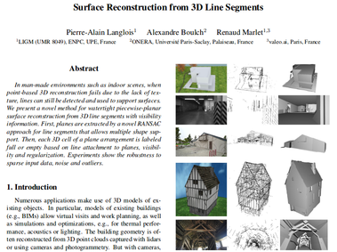
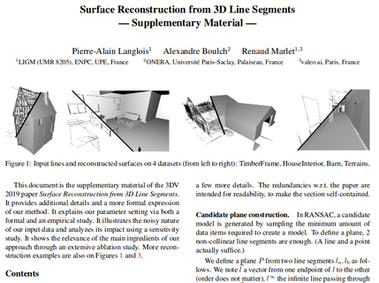

|  |  |
@inproceedings{langlois:hal-02344362,
TITLE = {{Surface Reconstruction from 3D Line Segments}},
AUTHOR = {Langlois, Pierre-Alain and Boulch, Alexandre and Marlet, Renaud},
URL = {https://hal.archives-ouvertes.fr/hal-02344362},
BOOKTITLE = {{2019 International Conference on 3D Vision (3DV)}},
ADDRESS = {Qu{\'e}bec City, Canada},
PUBLISHER = {{IEEE}},
PAGES = {553-563},
YEAR = {2019},
MONTH = Sep,
DOI = {10.1109/3DV.2019.00067},
HAL_ID = {hal-02344362},
HAL_VERSION = {v1},
}
|
|